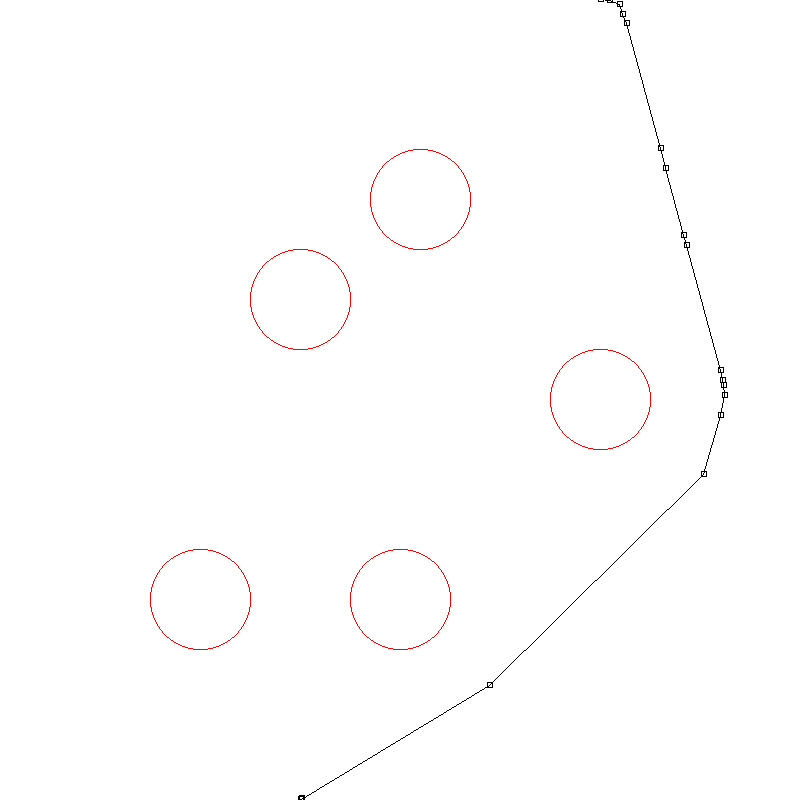

Path-planning System
I developed the path-planning system based on Rapidly-Exploring Random Tree(RRT).
The path-planning system takes the coordinates of the obstacles detected by stereo camera,
creating a path to avoid the obstacles.
Here is an example of my RRT implementation:
 |
 |
| step 0: tree reaches goal |
step 1: intial path |
| |
|
|  |
|
| step 2: shorten path |
step 3: trim unnecessary points |
The path-planning system only discovers the area around the vehicle, and
the area changes according to the position of the vehicle.
^TOP
Auto-exposure Method
Since the vehicle walks on the ground, the lower part of stereo camera
should be ground where the exposure value is close to the obstacle.
The specialized auto-exposure method can ba expressed as following steps:
- Weighted Average Brightness=(Average greyscale of the lower 1/3 part of the image) * 0.7 +
Averge greyscale of other part * 0.3
- Iterate changing the exposure setting of stereo camera so that this weighted average brightness
can fall between 96~160(8-bit greyscale).
 |
 |
| Built-in auto-exposure method |
Specialized auto-exposure method |
With the specialized auto-exposure method, the images captured by stereo camera
are more clear. Consequently, the result of obstacle detection is improved.
^TOP